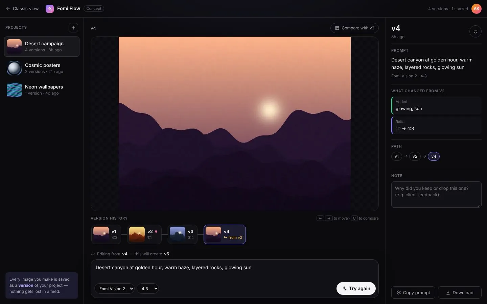
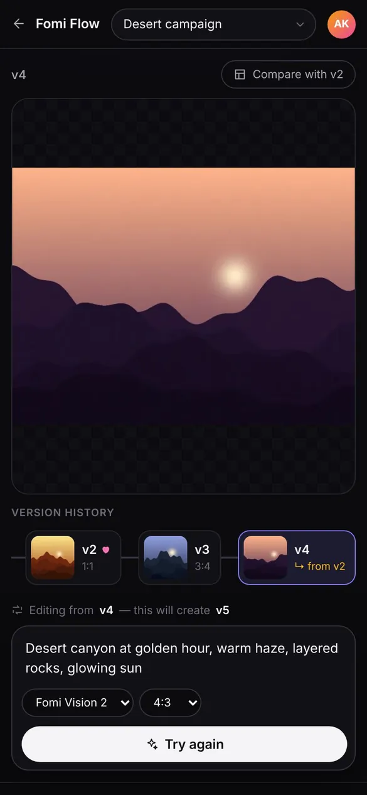

The challenge
Professional creators iterate on one image many times. In a normal feed they lose track of which prompt made which result, and going back to an older idea means starting over.
Project 04 · Product Redesign
My redesign of an AI image workspace where every image is a version you can compare, branch and restore.


Overview
Most AI image tools show results as an endless feed, so good results get lost. In Fomi Flow every generation is a version inside a project.
A version strip shows the history (with branches like "from v2"), a compare slider puts two versions side by side, and a "What changed" panel lists the prompt words added or removed and any settings change.
Professional creators iterate on one image many times. In a normal feed they lose track of which prompt made which result, and going back to an older idea means starting over.
I treated every image like a saved version in a design tool. The prompt bar starts filled with the selected version, so editing means changing a few words instead of rewriting everything, and each change is explained automatically.
Screens
Real screenshots from the live project. Click any screen to enlarge it.
Features
Every generation is saved as a numbered version inside a project.
A version strip shows where each image came from, e.g. "v4 from v2".
Drag a slider to see two versions side by side.
Lists prompt words added or removed and any settings change, like ratio 1:1 to 4:3.
The prompt bar starts with the selected version, so you only change a few words.
Arrow keys move between versions and C opens compare.
Save a note on why you kept a version and copy its prompt in one click.
Separate projects like campaigns or poster sets, each with its own versions.
Designed for phone, tablet and desktop.
Live preview
Load the real, live website below and switch between desktop, tablet and phone sizes.
Tech stack
I can build a fast, beautiful and responsive website like this for your business too.